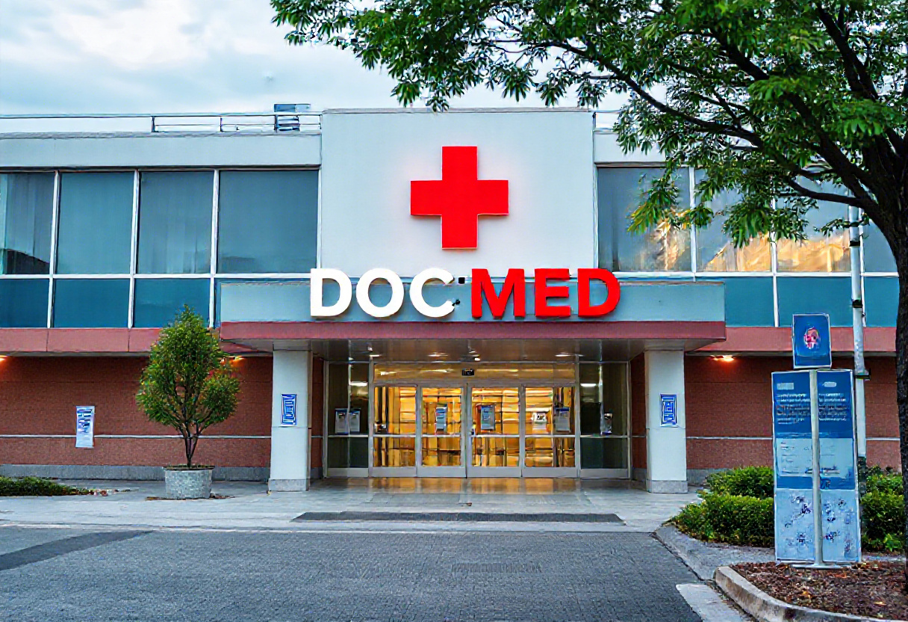
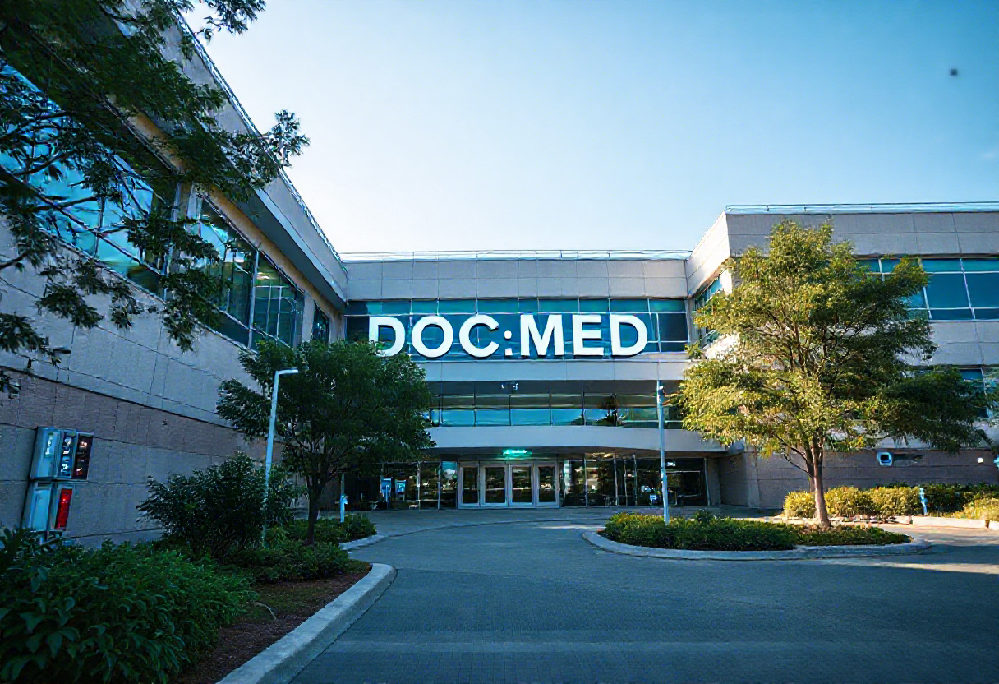
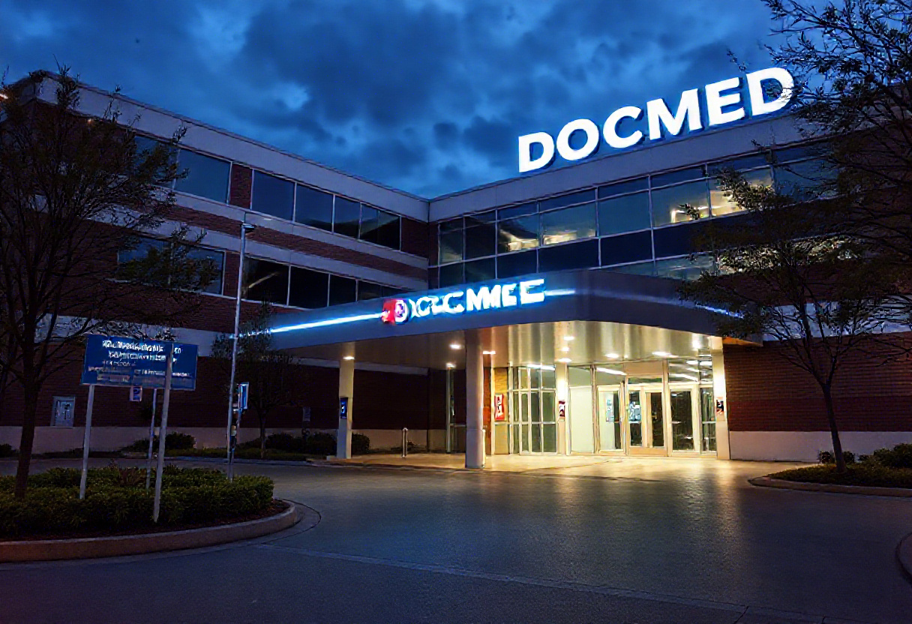

Our internationally recognized care ensures the safety of you and your loved ones. In addition to providing you with extremely specialized medical treatment, including tertiary and super specialty care, at our cutting-edge facilities, the core of our healthcare services is patient safety. You may relax knowing that our skilled and experienced medical staff is working around the clock to provide an exceptional patient experience at our hospitals in Batharamulla, Sri Jayawardhanapura kotte, and Galle.
We guarantee the best care for all of your health issues through a panel of more than 300 visiting and resident specialist consultants and our caregiving staff. Due to the fact that we bring in foreign best practices and guarantee better results, we have always been regarded as one of Sri Lanka's top healthcare providers.
The Main Branch, which is centrally located in the city, acts as the core for all main medical services. With a team of highly qualified doctors and cutting-edge medical equipment, this branch provides comprehensive care in multiple fields, including as cardiology, cancer, surgery, and pediatrics. The Main Batharamulla Branch is renowned for providing full-service inpatient care, emergency treatment, and cutting-edge diagnostic services.
The Downtown Branch, which is located in the busy downtown area, specializes on outpatient services and provides prompt and effective laboratory, diagnostic imaging, and medical consultations. Patients seeking routine checkups, urgent care for minor health issues, or consultations with specialists may choose this section. Additionally, it offers the convenience of a walk-in clinic for urgent but non-emergency illnesses to the metropolitan population.
The Galle Branch is a family-oriented facility designed to cater to the health needs of local communities in suburban areas. With a focus on family medicine, pediatrics, and preventive healthcare, this branch offers wellness programs, vaccination clinics, and chronic disease management. Its modern birthing center and pediatric care services make it a popular choice for young families.
| Our Promises | Description | |
|---|---|---|
| Mission | "To provide compassionate and empathetic healthcare..." | |
| Vision | "To be the top healthcare provider in the world..." | |
| Our Values | "With an emphasis on patient safety and clinical outcomes..." | |
| Note: Please visit our website for more updated Information | ||